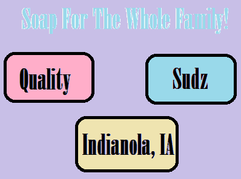

Quality Sudz is located in Indianola, IA a mediume sized town that still retains that everybody knows everbody feeling. It seemed only natural to start our soap store in this little geme of America. Sense then it has been Qualitz Sudz mission to maintain a cozy, family freindly, and comofortabe shop for all of our paitrins.
We are just right off of Iowa Avenue going towards Simpson College. Our Shop is easy to spot as our world record sized hand made bar is displayed right outside of our shop! We look forward to meeting and doing bussines with all of your freinds and fmaily.
